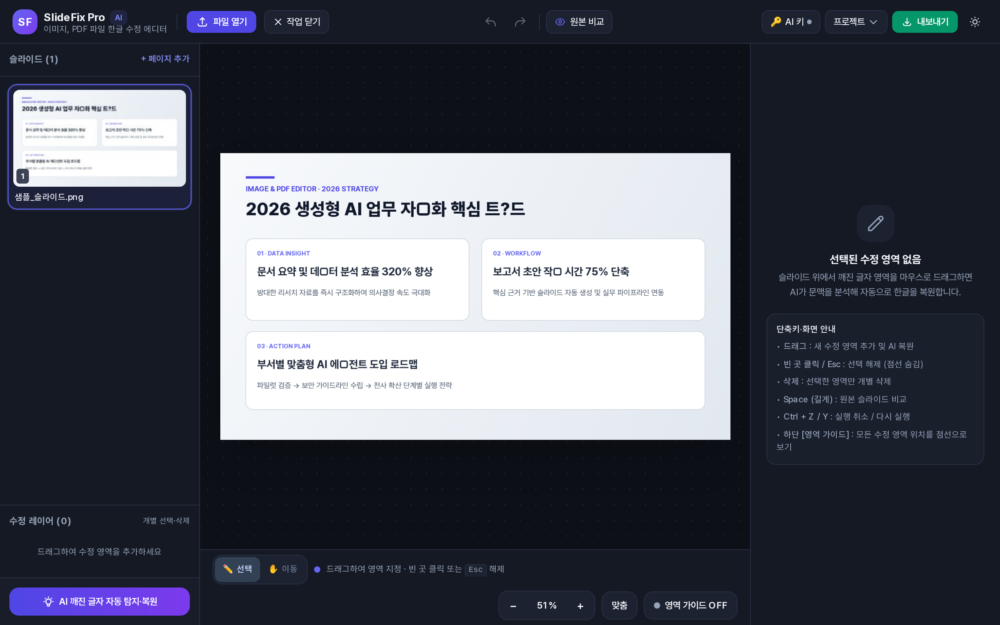
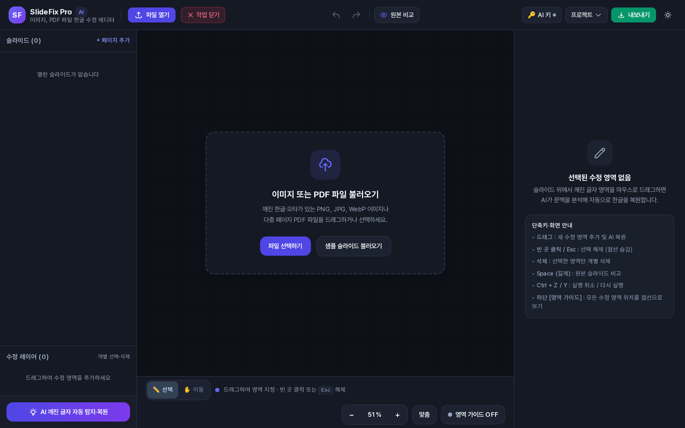
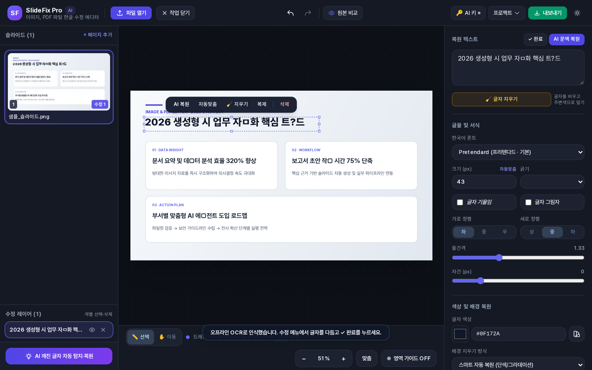
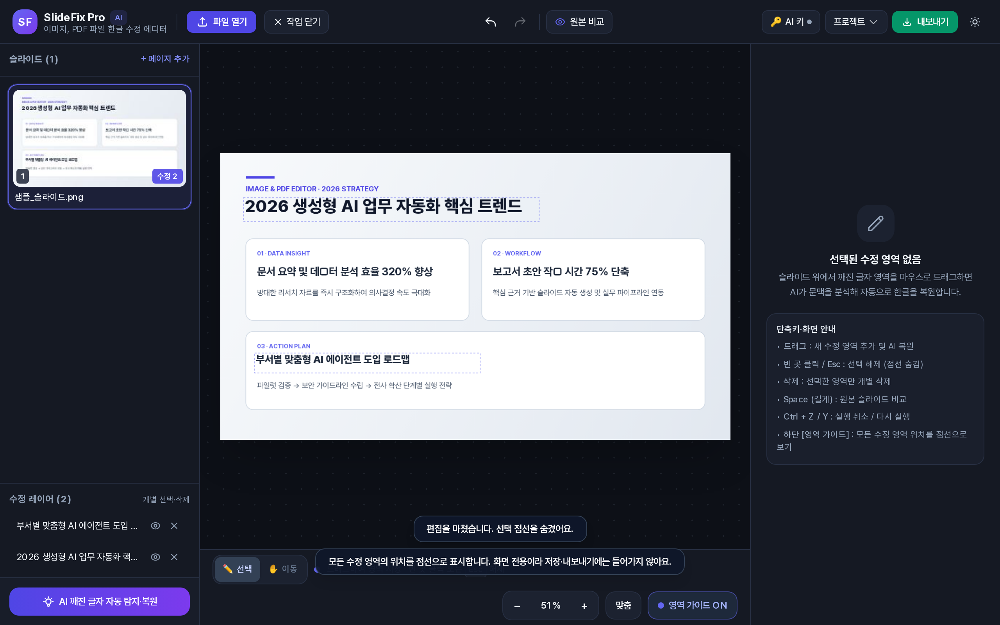
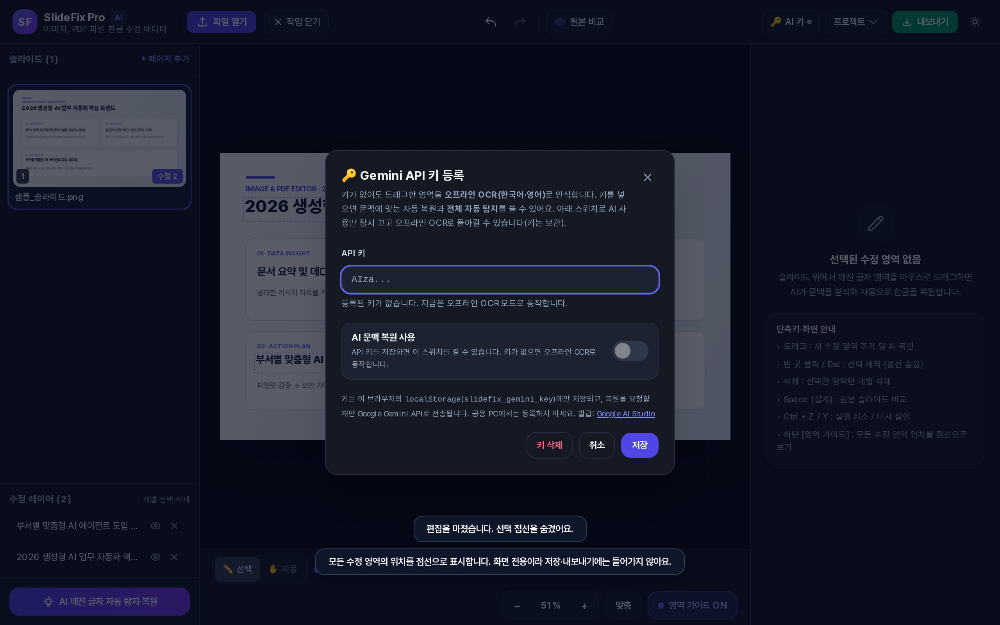

공유받은 슬라이드 캡처나 PDF에서 글자가 □, ? 로 뭉개졌을 때 — 그 줄만 드래그하면
원래 문장으로 복원하고 원본 스타일(크기·굵기·색·정렬)에 맞춰 다시 그려 주는 무설치 웹 에디터입니다.
슬라이드를 이미지(PNG·JPG)나 PDF로만 받으면 글자를 고칠 수 없습니다. 원본 편집 파일이 없기 때문입니다. SlideFix Pro는 그 이미지 위에서 문제가 된 부분만 다시 그리는 방식으로 이 문제를 풉니다. 드래그한 영역의 글자를 읽고 → 문맥에 맞는 한국어를 찾아 → 원본의 글자 크기·굵기·색·정렬을 흉내 내 그 자리에 덮어 그립니다.
| 단계 | 하는 일 | 쓰는 화면 |
|---|---|---|
| ① 불러오기 | PNG · JPG · WebP 이미지, 다중 페이지 PDF. 여러 파일을 한 번에 열 수 있습니다. | [파일 열기] · 화면에 끌어다 놓기 |
| ② 영역 지정 | 깨진 글자 줄을 마우스·펜으로 드래그해 사각형 영역을 만듭니다. | 캔버스 위 드래그 |
| ③ 글자 읽기 | 영역의 글자를 인식합니다. AI 키가 있으면 문맥으로 복원, 없으면 오프라인 OCR로 인식합니다. | 드래그 직후 자동 실행 |
| ④ 스타일 맞추기 | 영역 안의 실제 글자 잉크를 재서 크기 · 굵기 · 색 · 정렬을 추정하고, 배경도 주변 색으로 채웁니다. | 오른쪽 수정 패널 |
| ⑤ 내보내기 | 현재 슬라이드를 PNG(고화질) · JPG(경량)로, 또는 전체 슬라이드를 다중 페이지 PDF로 저장합니다. | [내보내기] 메뉴 |
| 구분 | AI 사용 ON — Gemini 키 등록 | AI 사용 OFF — 키 없음 또는 스위치 끔 |
|---|---|---|
| 드래그 후 글자 처리 | 영역의 문맥을 읽어 자연스러운 한국어로 복원하고, 무엇이 어떻게 바뀌었는지 메모를 남깁니다. | 브라우저 안에서 도는 오프라인 OCR(한국어+영어)이 글자를 읽습니다. 깨진 글자는 엉뚱하게 읽힐 수 있어 직접 손보는 경우가 있습니다. |
| 전체 자동 탐지 | 왼쪽 아래 [AI 깨진 글자 자동 탐지·복원]으로 슬라이드 전체의 깨진 곳을 한 번에 찾아냅니다. | 사용할 수 없습니다(키 필요 안내). 대신 영역을 하나씩 드래그합니다. |
| 필요한 것 | Google AI Studio에서 발급한 Gemini API 키(무료 등급 가능). | 없음. 첫 사용 때 인식 모델만 내려받습니다. |
| 속도 | 영역 한 곳당 몇 초(네트워크 상태에 따라). | 첫 인식은 인식 모델을 내려받느라 수십 초 걸리고, 그다음 영역부터는 몇 초. |
접속 주소는 https://sliderfix-pro.vercel.app/ 입니다. 처음 열면 연습용 샘플 슬라이드가 자동으로 열립니다 — 제목과 카드에 일부러 깨진 글자(□, ?)를 넣어 둔 슬라이드라, 파일을 준비하지 않아도 바로 따라 해 볼 수 있습니다.

| No | 영역 | 하는 일 |
|---|---|---|
| ① | 상단 도구 막대 | 왼쪽부터 [파일 열기] · [작업 닫기] · 실행 취소/다시 실행 · [원본 비교] · [🔑 AI 키] · [프로젝트] · [내보내기] · 라이트/다크 전환. |
| ② | 슬라이드 목록 | 연 슬라이드의 썸네일. 수정 N 배지는 그 슬라이드에 얹은 수정 영역 개수입니다. 위의 + 페이지 추가로 파일을 더 열 수 있습니다. |
| ③ | 수정 레이어 목록 | 이 슬라이드에 만든 수정 영역을 한 줄씩. 눈 아이콘으로 잠시 숨기고, ×로 개별 삭제합니다. 항목을 누르면 그 영역이 선택됩니다. |
| ④ | 캔버스 | 슬라이드 원본과 수정 결과가 함께 보이는 작업판. 여기서 드래그해 영역을 만듭니다. |
| ⑤ | 수정 패널 | 선택한 영역의 글자·글꼴·색·배경을 다듬는 곳. 선택 전에는 단축키 안내가 보입니다. |
| ⑥ | 하단 바 | ✏️ 선택 / ✋ 이동 모드, − 100% + 확대·축소, [맞춤], [영역 가이드 ON/OFF]. |
| ⑦ | 플로팅 퀵바 | 영역을 드래그하면 그 위에 뜨는 작은 도구막대 — AI 복원 · 자동맞춤 · 🧹 지우기 · 복제 · 삭제. |
| ⑧ | AI 자동 탐지 | 왼쪽 목록 맨 아래 [AI 깨진 글자 자동 탐지·복원]. 슬라이드 전체를 훑어 깨진 곳을 한 번에 찾습니다(AI 키 필요). |
작업을 [작업 닫기]로 접으면 아래처럼 불러오기 화면이 나옵니다. 여기서 [파일 선택하기] 또는 [샘플 슬라이드 불러오기]로 시작합니다.

고칠 슬라이드를 엽니다. PDF는 페이지마다 슬라이드가 되므로, 여러 장짜리 보고서도 한 번에 처리할 수 있습니다.
| 형식 | 처리 방식 | 이럴 때 |
|---|---|---|
| PNG · JPG · WebP | 그대로 슬라이드 1장 | 카톡·메일로 받은 슬라이드 캡처, 회의 화면 캡처 |
| 페이지마다 슬라이드 1장으로 변환 | 다중 페이지 보고서·발표자료를 통째로 손볼 때 |
핵심 동작은 하나입니다. 깨진 글자가 있는 줄을 사각형으로 감싸면 끝입니다.

| 버튼 | 하는 일 | 이럴 때 |
|---|---|---|
| AI 복원 | 지금 선택한 영역을 다시 AI로 복원합니다. | OCR 결과가 엉뚱할 때 다시 시도 |
| 자동맞춤 | 글자 크기를 영역에 맞춰 자동으로 줄입니다. | 글자가 영역을 넘칠 때 |
| 🧹 지우기 | 글자를 비우고 주변 배경색으로 덮습니다. | 워터마크·불필요한 문구 지우기 |
| 복제 | 같은 수정 영역을 하나 더 만듭니다. | 같은 모양을 다른 위치에 반복 |
| 삭제 | 선택한 영역만 지웁니다(단축키 Delete). | 잘못 잡은 영역 취소 |
오른쪽 수정 패널에서 글자와 모양을 마무리합니다. 자동 추정값이 처음부터 들어가 있으니, 어긋난 항목만 손보면 됩니다.
| 항목 | 설명과 기본값 |
|---|---|
| 복원 텍스트 | 영역에 그릴 문장. OCR·AI 결과가 자동으로 채워집니다. 직접 입력해도 됩니다. 오른쪽 위 [✓ 완료]·[AI 문맥 복원] 버튼. |
| 🧹 글자 지우기 | 글자를 모두 비우고 주변색으로 덮습니다(워터마크 제거). |
| 한국어 폰트 | 10종 — Pretendard(기본) · Noto Sans KR · IBM Plex Sans KR · Nanum Gothic · Gowun Dodum · Noto Serif KR · Nanum Myeongjo · Do Hyeon · Black Han Sans · Jua. |
| 크기 · 굵기 | 크기(px, 8~240)와 [자동맞춤], 굵기 4단(보통 400 · 중간 500 · 굵게 700 · 아주 굵게 900). |
| 글자 기울임 · 그림자 | 체크박스 두 개로 켜고 끕니다. |
| 정렬 | 가로(좌·중·우), 세로(상·중·하). |
| 줄간격 · 자간 | 슬라이더. 원본 줄 간격을 자동으로 되살립니다. |
| 글자 색상 | 색상 선택기 + HEX 입력 + 스포이드(캔버스에서 글자색 추출). |
| 배경 지우기 방식 | 스마트 자동 복원(단색/그라데이션) · 지정 단색 채우기 · 투명 배경(글자만 얹기). |
| 배경 색상 | 색상 선택기 + HEX + [주변색 재추출] + 스포이드. |
| 여백 확장 · 모서리 둥글기 | 덮어 그리는 사각형의 여백(0~20px)과 둥글기(0~24px). |
한 영역을 다 고쳤으면 ✓ 완료로 점선을 숨기고, 다음 영역으로 넘어갑니다. 다 고친 뒤에는 원본과 나란히 확인하세요.

| 키 | 동작 |
|---|---|
| 드래그 | 새 수정 영역 만들기 + 글자 인식 |
| 빈 곳 클릭 / Esc | 선택 해제(점선 숨김) |
| Delete | 선택한 영역만 삭제 |
| 방향키 / Shift+방향키 | 선택 영역을 1px / 10px씩 밀기 |
| Space 길게 | 원본 슬라이드 보기(손을 떼면 복귀) |
| Ctrl + Z / Ctrl + Y | 실행 취소 / 다시 실행 |
| Ctrl + 휠 | 마우스 위치를 기준으로 확대·축소 |
오른쪽 위 초록색 [내보내기]를 누르면 세 가지가 나옵니다.
| 메뉴 | 결과 | 파일 이름 |
|---|---|---|
| 현재 슬라이드 PNG 고화질 | 지금 슬라이드 한 장, 원본 해상도 그대로(화면 확대·축소와 무관) | 원본이름_fixed.png |
| 현재 슬라이드 JPG 경량 | 같은 장을 가벼운 JPG로(품질 0.95) | 원본이름_fixed.jpg |
| 전체 슬라이드 PDF 다중 페이지 | 연 슬라이드 전부를 한 PDF로. 페이지마다 원본 비율·크기를 유지합니다. | SlideFix_Pro_Export.pdf |
작업을 며칠에 나눠 해야 한다면 [프로젝트] → 작업 파일 저장 (.json)으로 저장해 두세요.
파일 이름은 SlideFix_Project.json이고, 작업 파일 불러오기로 그대로 이어서 작업할 수 있습니다.
슬라이드 이미지와 수정 레이어가 함께 담깁니다.
AI는 선택 사항입니다. 키가 없어도 드래그 → 인식 → 수정 → 내보내기가 모두 됩니다. 다만 문맥에 맞는 복원과 전체 자동 탐지는 Gemini 키가 있어야 동작합니다.

| 항목 | 내용 |
|---|---|
| 키 보관 위치 | 이 브라우저의 localStorage — 항목 이름 slidefix_gemini_key. 서버에 저장하는 곳은 없습니다. |
| 외부로 나가는 것 | ① 키를 등록했고 AI가 켜져 있을 때의 복원·자동 탐지 요청(영역 이미지 + 문맥) ② 화면을 그리는 CDN 라이브러리·폰트. 그 밖에는 없습니다. |
| 나가지 않는 것 | 슬라이드 원본 파일과 편집 결과. 변환·편집·내보내기는 모두 브라우저 안에서 이뤄집니다. |
| 공용 PC | 키를 등록하지 마세요. 등록했다면 쓰고 나서 [키 삭제]. |
| 한계 | 대응 |
|---|---|
| 글자를 덧그리는 방식이라 원본 폰트와 100% 같지 않을 수 있습니다. | 폰트·크기·색을 패널에서 미세 조정하고, 원본 비교로 확인하세요. 확대해서 보면 차이가 보입니다. |
| 사진을 찍은 슬라이드처럼 기울거나 흐린 이미지는 인식률이 떨어집니다. | 영역을 좁게 잡고, 안 되면 직접 입력. 가능하면 원본 캡처·PDF를 쓰세요. |
| 복잡한 배경(사진·강한 그라데이션) 위에서는 덮은 자리가 미세하게 보일 수 있습니다. | 배경 지우기 방식을 ‘지정 단색’으로 바꾸고 스포이드로 주변색을 찍어 채우세요. |
| 긴 문장을 좁은 영역에 넣으면 잘리거나 작아집니다(68% 하한 규칙). | 줄 전체 폭을 영역으로 잡고, 필요하면 [자동맞춤] 또는 크기 조정. |
| 새로고침하면 작업 내용이 사라집니다(자동 저장 없음). | 중간에 [프로젝트] → 작업 파일 저장으로 JSON을 남기세요. |
Q1.드래그했는데 엉뚱한 글자가 나옵니다.
깨진 글자는 OCR이 가장 어려워하는 대상입니다. ① 패널의 복원 텍스트를 직접 고치거나 ② [AI 문맥 복원](키 필요)을 쓰거나 ③ 영역을 그 줄 폭에 맞게 다시 잡아 보세요. 화면 3의 OCR 결과처럼 일부 글자가 바뀌어 나오는 것은 정상 동작이며, 마지막 확인은 사람이 합니다.
Q2.복원한 글자가 영역 밖으로 잘려 보입니다.
선택 영역은 자동으로 넓어지지 않기 때문입니다. 글자가 영역 안에서 잘리거나 68%까지 줄어듭니다. 영역을 다시 잡아 문장 전체 폭을 감싸거나, 크기를 줄이고 [자동맞춤]을 눌러 보세요.
Q3.덮은 자리에 회색 띠가 보입니다.
배경색 추정이 어긋난 경우입니다. 배경 지우기 방식을 지정 단색 채우기로 바꾸고 [주변색 재추출] 또는 스포이드로 정확한 색을 찍어 주세요. 여백 확장 값을 0에 가깝게 줄이면 경계가 덜 보입니다.
Q4.PDF 여러 장을 한 번에 고치고 싶습니다.
PDF를 열면 페이지마다 슬라이드가 생깁니다. 페이지를 옮겨 가며 고친 뒤 [내보내기] → 전체 슬라이드 PDF로 한 파일로 저장하세요. 페이지 크기가 서로 다른 PDF도 각 페이지 비율을 유지해 묶입니다.
Q5.AI 키를 넣었는데 자동 탐지가 실행되지 않습니다.
키 창의 AI 문맥 복원 사용 스위치가 꺼져 있으면 확인 창이 먼저 뜹니다(켜고 실행 여부를 물음). “AI 키가 유효하지 않습니다”가 나오면 키 값·권한 문제이니 Google AI Studio에서 키를 다시 확인하세요.
Q6.모바일·태블릿에서도 쓸 수 있나요?
됩니다. 다만 손가락은 화면 이동에 쓰이므로, 하단에서 ✋ 이동 모드로 옮겨 다니고 ✏️ 선택 모드에서 펜으로 영역을 잡는 흐름이 편합니다. 정밀한 스타일 조정은 PC 화면(넓은 패널)에서 하는 것이 빠릅니다.